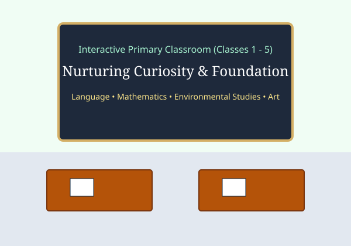

Classes 1 to 5
Primary Stage: Building Conceptual Bridges
During primary schooling, students transition from play-based discovery into structured inquiry. The emphasis is on building strong literacy in English and Hindi, mathematical logical thinking, environmental awareness, and moral storytelling.
Subjects & Disciplines:
- • English (Grammar & Reader)
- • Hindi (Vyakaran & Sahitya)
- • Mathematics & Mental Math
- • Environmental Studies (EVS)
- • Computer Basics & IT Skills
- • General Knowledge & Moral Edu
- • Visual Arts, Craft & Music
- • Physical Education & Yoga
Assessment: Continuous and Comprehensive Evaluation (CCE) with periodic interactive worksheets.

Stage 2: Preparatory